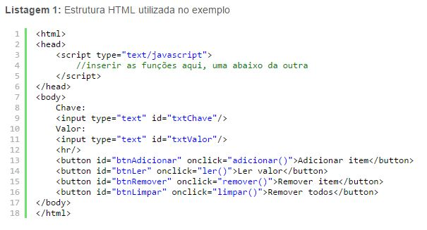
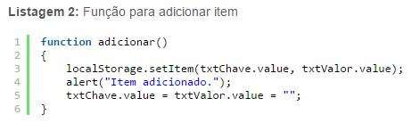
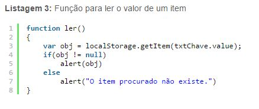
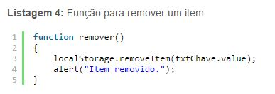
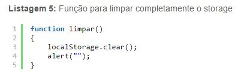
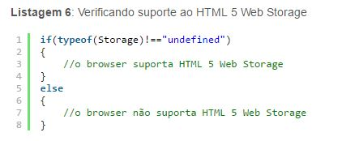
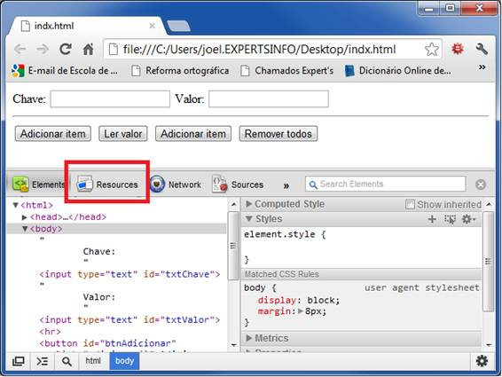
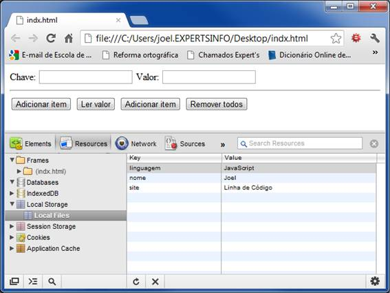

Para entendermos a vantagem obtida na utilização do WebStorage vamos compreender como uma aplicação trabalhava com cookies.
Os cookies são inseridos no cabeçalho HTTP, sendo assim, sua performance pode ser comprometida. E estando as informações no cabeçalho HTTP, podemos nos perguntar: o quão protegidas elas estão?
Outro desafio que se apresenta ao se trabalhar cookies é a capacidade de armazenamento: 4kB por cookies vezes no máximo 20 cookies é igual a capacidade de 80 kB. Essa restrição de capacidade por si só já é um problema, mas ela acarreta outro dificuldade, o gerenciamento destes cookies.
Pense que em uma aplicação que real seria muito útil armazenar mais do que 80 kB, para fazer isso com cookies seria necessário estabelecer um controle de validade dos cookies, essa seria uma maneira muito inteligente de utilizar cookies – afinal ele precisar estar armazenado somente enquanto for necessário, mas o trabalho para controlar as datas de validade dos cookies seria um trabalho que requisitaria calcular seus tempos de validade, mais código.
O armazenamento de dados tornou-se bem mais prático e eficiente com o lançamento do HTML 5. Foram inseridos dois objetos para controlar tal funcionalidade: o localStorage e o sessionStorage.
O funcionamento desses objetos é semelhante entre eles, com a diferença que o localStorage armazena dados sem data de expiração, enquanto o sessionStorage armazena dados apenas para seção atual. Fechando o browser, os dados do sessionStorage são automaticamente apagados, já os do localStorage são mantidos por tempo indeterminado.
Os dados são guardados no browser no formato chave/valor e, portanto, cada item deve possuir um identificador único que o diferencia dos demais e através do qual ele é localizado.
Tanto o localStorage quanto o sessionStorage possuem os seguintes métodos:
• getItem(chave): recupera um item armazenado no storage através de sua chave.
• setItem(chave, valor): armazena um item no storage definindo seu identificador e seu valor. Se for informada uma chave já existente, o valor atual é substituído.
• removeItem(chave): remove o item armazenado buscando pela sua chave. Uma vez removido, o item não pode ser removido.
• clear(): limpa completamente o storage, removendo todos os itens definitivamente.
Armazenamento de dados na prática
A seguir veremos alguns exemplos de como utilizar o armazenamento de dados do HTML 5. Por questão de prática, utilizarei apenas o localStorage, mas para usar o sessionStorage o procedimento é semelhante, bastando alterar apenas o objeto. Na listagem a seguir temos um código HTML com a estrutura básica da página que será usada no exemplo. Em seguida serão apresentadas as funções utilizadas para ilustrar o funcionamento de cada um dos métodos citados, as quais devem ser inseridas no local indicado na Listagem 1.
Primeiramente vejamos como inserir um item no storage. O usuário deve inserir uma chave e um valor nos respectivos campos do documento.
Se o item for inserido corretamente, a mensagem “Item adicionado.” será exibida na tela. A seguir temos a função de leitura de um item. O usuário deve inserir a chave que está buscando no primeiro campo e clicar no botão “Ler valor”. Se o item existir, seu valor será exibido em uma caixa de mensagem.
Atribuímos o retorno do método getItem a uma variável “obj”. Se o valor dessa variável for “null”, indica que o item procurado não existe. Caso contrário, seu valor será exibido. A próxima função faz a remoção de um item específico, a partir da chave digitada no primeiro campo.
Nesse caso dispensamos a verificação da existência do item, pois a intenção é removê-lo. Mas o leitor pode adaptar e fazer a mesma verificação da Listagem 3 antes de remover. Por último, temos a função “limpar()” que, como o nome sugere, invoca o método “clear()” para remover todos os itens do storage.
Suporte nos browsers
A maioria dos browsers em suas versões mais atuais já suporta o Web Storage do HTML 5, mas vale a pena garantir que, se esse suporte não existir, o usuário fique sabendo previamente. Com um pequeno script, podemos verificar se o browser suporta essa funcionalidade e, em caso negativo, abortar as operações que fariam uso da mesma. Este código encontra-se na listagem a seguir.
Existe mais de uma forma de fazer essa verificação, a apresentada acima é a mais de mais simples compreensão para quem está conhecendo agora essa funcionalidade do HTML 5. Gerenciando o storage pelo browser
Alguns dos browsers mais atuais oferecem ferramentas de auxílio ao desenvolvedor, aqui apresentarei a ferramenta oferecida pelo Google Chrome que permite visualizar os dados armazenados do web storage, bem como editá-los e removê-los. Com a página de testes aberta no Chrome, pressione F12. Na parte inferior da janela será aberta uma aba com algumas opções, como vemos na figura a seguir. Clique na opção “Resources”.
Figura 1: Ferramenta do Chrome para desenvolvedores. Em seguida, na estrutura de árvore da esquerda, clique na opção “Local Storage” e no subitem “Local Files”. Os dados armazenados no web storage serão apresentados do lado direito, como se vê na Figura 2.
Figura 2: Dados armazenados do local storage Nesse caso, eu havia armazenado três itens com seus respectivos valores. Clicando com a direita sobre cada um, serão oferecidas opções de edição e remoção do item selecionado. Use-as para testar o funcionamento de cada uma.